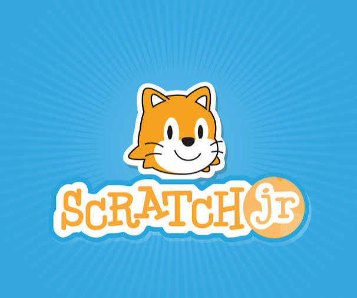
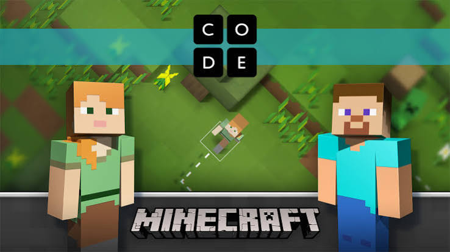

¡Construimos con Cartón y micro:bit!
Unimos manualidades, circuitos y programación en bloques para que los proyectos cobren vida y movimiento en el mundo real.

Escape Rooms Nostálgico
Una aventura interactiva para resolver enigmas, códigos secretos y acertijos en familia. ¡Desafío para todas las edades!

Simulador micro:bit MakeCode
Probá tus programas, botones, sensores y matriz de LEDs en el simulador oficial gratuito de Microsoft directamente en tu navegador.
¿Cómo creamos en el Taller?
Unimos manualidades, circuitos y código para dar vida a nuestras creaciones.
Construcción en Cartón
Cortamos, ensamblamos y diseñamos estructuras, personajes y maquetas usando cartón y materiales reciclables.
Crafting & ReciclajePlaca BBC micro:bit
Conectamos la placa de robótica con sensores de luz, botones táctiles, luces LED, servomotores y cables cocodrilo.
Circuitos & SensoresProgramación en Bloques
Escribimos la lógica en MakeCode y Scratch para que nuestros inventos interactúen y cobren vida en el mundo real.
MakeCode & ScratchLo que creamos en el Taller
Hacé click en un proyecto o esperá que cambie automáticamente.

Sala 5
1° Grado 2° Grado
2° Grado
 3° Grado
3° Grado
 4° Grado
4° Grado
 5° Grado
5° Grado
 6° Grado
6° Grado
Texturas Mágicas: Cartón y Sensores Táctiles 🌱
Los más chiquitos exploraron texturas de cartón, tela y papel de aluminio. Conectamos sensores táctiles a la micro:bit para que suenen distintos sonidos al tocar cada material.
Nuestras Aulas Maker & Programación
Seguí creando y explorando en familia
Herramientas virtuales y tips de reciclaje para continuar los proyectos desde el hogar.
Simulador micro:bit Online
¿No tenés la placa física en casa? Con el simulador oficial gratuito de Microsoft MakeCode podés probar luces, botones, brújula y sonidos en la pantalla en tiempo real.
Abrir Editor MakeCodeMateriales que reciclamos
¡En casa no tiramos nada! Guardamos cajas de cartón fino, tubos de cartón, tapitas plásticas, clips metálicos y papel de aluminio. ¡Todo se transforma en ciencia y tecnología!